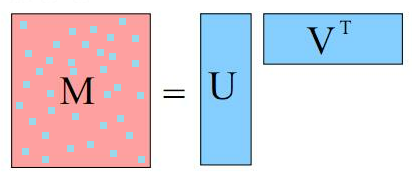
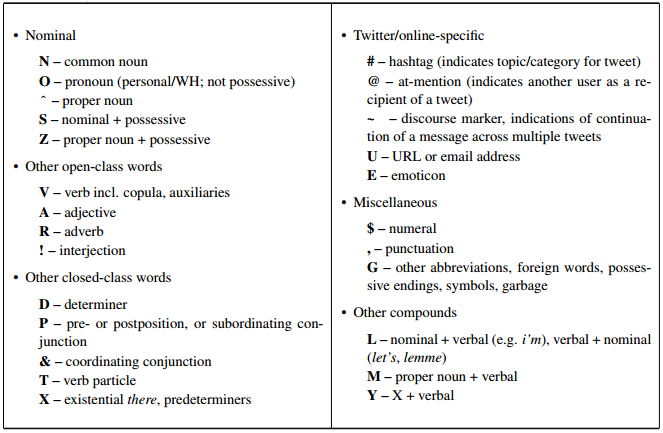

Vowpal Wabbit tutorial for the Uninitiated
Rob Zinkov
2013-08-13
Whenever I have a classification task with lots of data and lots of features, I love throwing Vowpal Wabbit or VW at the problem. Unfortunately, I find the array of commandline options in vw very intimidating. The github wiki is really good, but the information you need to be productive is scattered all over the place. This is my attempt to put everything you need in one place.
Note most of this is directly cribbed from the wiki. So always check there for the latest instructions. Also I have only covered the arguments and options I use the most often. Check the complete reference on the wiki for more information.
Installation
Vowpal Wabbit is being developed rapidly enough that it is worth it to just install directly from the github repo.
git clone https://github.com/JohnLangford/vowpal_wabbit.git
cd vowpal_wabbit
makeThe only dependency short of a working c++ compiler is the boost program options library. Which is fairly straightforward to get
sudo apt-get install libboost-program-options-devInput Format
For each of the modes vw can be run from, it expects its data in a particular format. The default mode is a SGD online learner with a squared loss function. It expects a label followed by a | and then pairs of features and their values separated by : . Values can be any floating point number. Features can be any string as long as it contains no whitespace, the :, or the | characters.
label | feature1:value1 feature2:value2 ...Note vw also supports placing features into namespaces. In this case, if you immediately follow the | with a string all features are considered under that namespace
label |A feature1:value1 |B feature2:value2Because of this semantics features should be at least a space away from any |
As an example consider classifying a zebra
1 |MetricFeatures height:1.5 length:2.0 |OtherFeatures NumberOfLegs:4.0 HasStripes:1.0If a feature has a value of zero, it does not need to be specified making this format ideal for sparse representations.
There are other optional parts to the data format like marking some rows or some namespaces as more important to correctly classify. For more details check out the input format wikipage
Unsure if you produced valid vw input, use the validator
Training
Training is done by feeding data to vw either as a file argument with -d or --data, or directly through stdin
zcat train.vw.gz | vw --cache_file train.cache -f data.model --compressedWe have also specified a few more arguments here. --cache-file is where the data is stored in a format easier for vw to reuse. -f specifies the filename of the predictor. By default none is created. compressed will make it a point to try to process the data and store caches and models in a gzip-compressed format.
Testing
For Testing we just feed data into vw the same way, but we add the -t argument to tell vw to ignore the labels, and use the -i argument to specify our training model.
zcat test.vw.gz | vw -t --cache_file test.cache -i data.model -p test.predIn addition -p specifies the file where predictions for our test data should go. Predictions are normalized from 0 to 1
Interestingly, this is the syntax for testing all models. Whether it be multiclass, contextual bandit or structured prediction, this will work. You do not need to re-enter all the training options here.
Model Introspection
Now the model vw produces really isn’t meant for human consumption. If you want, a better idea of what’s going on. You’ll want to output your models in a more human-readable format.
Consider the boston housing dataset, where will try to predict median housing prices based on the following variables:
1. CRIM: per capita crime rate by town 2. ZN: proportion of residential land zoned for lots over 25,000 sq.ft. 3. INDUS: proportion of non-retail business acres per town 4. CHAS: Charles River dummy variable (= 1 if tract bounds river; 0 otherwise) 5. NOX: nitric oxides concentration (parts per 10 million) 6. RM: average number of rooms per dwelling 7. AGE: proportion of owner-occupied units built prior to 1940 8. DIS: weighted distances to five Boston employment centres 9. RAD: index of accessibility to radial highways 10. TAX: full-value property-tax rate per $10,000 11. PTRATIO: pupil-teacher ratio by town 12. B: 1000(Bk - 0.63)^2 where Bk is the proportion of blacks by town 13. LSTAT: % lower status of the population 14. MEDV: Median value of owner-occupied homes in $1000's
24.0 | CRIM:0.00632 ZN:18.0 B:396.9 LSTAT:4.98 AGE:65.2 TAX:296.0 RAD:1.0 CHAS:0.0 NOX:0.538 RM:6.575 INDUS:2.31 PTRATIO:15.3 DIS:4.09
21.6 | CRIM:0.02731 ZN:0.0 B:396.9 LSTAT:9.14 AGE:78.9 TAX:242.0 RAD:2.0 CHAS:0.0 NOX:0.469 RM:6.421 INDUS:7.07 PTRATIO:17.8 DIS:4.9671
34.7 | CRIM:0.02729 ZN:0.0 B:392.83 LSTAT:4.03 AGE:61.1 TAX:242.0 RAD:2.0 CHAS:0.0 NOX:0.469 RM:7.185 INDUS:7.07 PTRATIO:17.8 DIS:4.9671
33.4 | CRIM:0.03237 ZN:0.0 B:394.63 LSTAT:2.94 AGE:45.8 TAX:222.0 RAD:3.0 CHAS:0.0 NOX:0.458 RM:6.998 INDUS:2.18 PTRATIO:18.7 DIS:6.0622
36.2 | CRIM:0.06905 ZN:0.0 B:396.9 LSTAT:5.33 AGE:54.2 TAX:222.0 RAD:3.0 CHAS:0.0 NOX:0.458 RM:7.147 INDUS:2.18 PTRATIO:18.7 DIS:6.0622
28.7 | CRIM:0.02985 ZN:0.0 B:394.12 LSTAT:5.21 AGE:58.7 TAX:222.0 RAD:3.0 CHAS:0.0 NOX:0.458 RM:6.43 INDUS:2.18 PTRATIO:18.7 DIS:6.0622
22.9 | CRIM:0.08829 ZN:12.5 B:395.6 LSTAT:12.43 AGE:66.6 TAX:311.0 RAD:5.0 CHAS:0.0 NOX:0.524 RM:6.012 INDUS:7.87 PTRATIO:15.2 DIS:5.5605
27.1 | CRIM:0.14455 ZN:12.5 B:396.9 LSTAT:19.15 AGE:96.1 TAX:311.0 RAD:5.0 CHAS:0.0 NOX:0.524 RM:6.172 INDUS:7.87 PTRATIO:15.2 DIS:5.9505
16.5 | CRIM:0.21124 ZN:12.5 B:386.63 LSTAT:29.93 AGE:100.0 TAX:311.0 RAD:5.0 CHAS:0.0 NOX:0.524 RM:5.631 INDUS:7.87 PTRATIO:15.2 DIS:6.0821
18.9 | CRIM:0.17004 ZN:12.5 B:386.71 LSTAT:17.1 AGE:85.9 TAX:311.0 RAD:5.0 CHAS:0.0 NOX:0.524 RM:6.004 INDUS:7.87 PTRATIO:15.2 DIS:6.5921
...To learn a model that is more interpretable instead of using -f we output a model using --readable_model
vw boston.data.vw --readable_model boston.modelboston.model now looks like
Version 7.3.0
Min label:0.000000
Max label:50.000000
bits:18
0 pairs:
0 triples:
rank:0
lda:0
0 ngram:
0 skip:
options:
:0
2580:0.713633
54950:0.054472
102153:3.058681
104042:0.013058
108300:-0.000079
116060:4.484257
125597:-0.052709
141890:-0.047248
158346:0.013684
165794:3.014200
170288:-0.165589
182658:0.385468
223085:0.124905
232476:-0.072961Unfortunely that isn’t very readable as we have lost the original feature_names these are just the hashed bucket they ended up in. To preserve the feature names we need to use the more human-readable model --invert_hash, and use -k to kill the cache as that doesn’t preserve the names.
vw boston.data.vw --invert_hash boston.modelLooking into boston.model we now see
Version 7.3.0
Min label:0.000000
Max label:50.000000
bits:18
0 pairs:
0 triples:
rank:0
lda:0
0 ngram:
0 skip:
options:
:0
^AGE:0.013058
^B:0.013684
^CHAS:3.058681
^CRIM:-0.047248
^DIS:0.385468
^INDUS:-0.052709
^LSTAT:-0.165589
^NOX:3.014200
^PTRATIO:0.124905
^RAD:-0.072961
^RM:0.713633
^TAX:-0.000079
^ZN:0.054472
Constant:4.484257For even more in-depth debugging you can audit model with --audit. As an example if we run vw boston.data.vw --audit we will see lots of features in this format
^AGE:104042:28.8:0.0188122@1.18149e+09^AGE is the feature name, 104042 is the hashed value for the feature, 28.8 is the value of that feature for this example, 0.0188122 is the weight we have learned thus far for the feature, and 1.1849e9 is a sum of gradients squared over the feature values, which is used for adjusting the weight on the feature.
Tuning the Learning algorithm
Now by default, vw when learning is optimizing this function
\[ \underset{w}{\text{min }} \lambda_1 \|w\|_1 + \frac{\lambda_2}{2} \Vert w \Vert_2^2 + \sum_i \ell(x_i,y_i,w) \]
Where \(\lambda_1\) and \(\lambda_2\) refer to L1 and L2 regularization functions. \(\ell\) refers to the loss function.
By default there is no explicit regularization, but L1 and L2 regularization may be added with the --l1 and --l2 options respectively.
A loss function can be specified with --loss_function. The default is squared, but options include logistic, hinge, or quantile
The optimal weights for \(w\) learned through running an online learning algorithm for each example (x, y). This algorithm is roughly
\[ \hat{y_t} = w_t x_t \] \[ w_{t+1} \leftarrow w_t + \eta_t^2\left(y_t - \hat{y_t}\right)x_t \] where \[ \eta_t = \lambda d^k \left(\frac{t_0}{t_0 + w_t}\right)^p \]
We can adjust the learning-rate \(\lambda\) with argument -l. The other variables, \(d\) \(t_0\) and \(p\) can be changed with --decay_learning_rate --initial_t and --power_t respectively. Unless you are sure you need to change these, the defaults will work fine.
Weights unless stated are all initialized at 0, they can start at another value with --initial_weight w or be randomized with the --random_weights seed option.
By default, weights are updated one example at a time. For trickier learning problems it sometimes helps to consider of minibatch of k examples at a time. This is doable with --minibatch k.
Selecting and Masking feature namespaces
Sometimes we are experimenting with which sets of features we want in our model.
We use --ignore to specify namespaces we don’t wish to include. The argument can be used multiple times. If we have many namespaces we might instead use --keep to only include certain namespaces. This is often used when testing a baseline. This option can also be used multiple times.
Interestingly, you can also use vw to learn which features to include, using an l1 learner and then mask the others. This is accomplished with the --feature_mask option as follows
vw -d data.vw --l1 0.001 -f features.model
vw -d data.vw -i features.model --feature_mask features.model -f final.modelMulticlass
VW supports classification with multiple categories by a reduction to binary classification. There are multiple reductions that can be done to get to the base binary classification. All the reductions are summarized in this tutorial paper
One Against All
One against all or (oaa) internally reduces the multiclass with k classes into K separate binary classification problems. Each binary classification then learns whether an example is that class or not.
Using oaa just requires the labels be natural numbers between 1 and k where k is the number of classes we have.
1 | feature1:2.5
2 | feature1:0.11 feature2:-0.0741
3 | feature3:2.33 feature4:0.8 feature5:-3.1
1 | feature2:-0.028 feature1:4.43
2 | feature5:1.532 feature6:-3.2To use --oaa just pass it an options with the number classes as its argument.
vw --oaa 3 multiclass.data.vw --loss_function logistic -f multiclass.modelError Correcting Tournament
Error correcting tournament represents multiclass as a m-elimination tournament where pairs of classes compete against each other to be the label for an example. Details exist in this paper
It uses the same format as --oaa and just uses the option --ect instead.
vw --ect 3 multiclass.data.vw -f multiclass.modelGenerally --ect outperforms --oaa
Cost-sensitive One Against All
Cost-sensitive one against all, introduces new syntax to the training file. In this case, there is no right classification as much as a preference for some classes over others. This preference is encoded by giving the preferred classes lower costs. The reduction is to a regression problem.
1:0 2:3 3:1.5 4:1 |f input features come here
1:0 3:1.5 2:3 |f input features come hereIf a class is left off, its assumed to have a cost of 1. And hence the two examples are equivalent. Training uses --csoaa and requires stating how many label classes exist.
vw --csoaa 4 -d multiclass.data.vw -f multiclass.modelWeighted All Pairs
Weighted all pairs reduces the cost-sensitive multiclass problem into an importance-weighted set of binary classification problems. It uses the same syntax as --csoaa and just requires --wap instead.
vw --wap 4 -d multiclass.data.vw --loss_function logistic -f multiclass.modelGeneral Multiclass Comments
Don’t be afraid to try all the reductions to find out which works best for your particular problem.
If you find yourself needing lots of classes consider using label dependent features.
Contextual Bandit
We can get more generic than just cost-sensitive multiclassification problems. Suppose we don’t ever know what the correct choice is for the problem. Instead what we have is an example of every decision we made and the cost we paid for that decision. Our task then is given the features of an example figure out the best action to pick so that in the long-run we minimize our cost.
This is considered a Contextual Bandit Optimization problem, which is itself a special class of Reinforcement Learning. We call this contextual since the decision is being made with the aid of features from the example and not just historical costs associated with this action.
The format consists of replacing the class label with a triplet of action cost probability each separated by :
1:2.0:0.4 | a:3.5 c:-0.2
3:0.5:0.2 | b:1.0 d:-1.0
4:1.2:0.5 | a:0.5 b:0.3 c:-5.3
2:1.0:0.3 | b:0.2 c:-1.1
3:1.5:0.7 | a:-2.4 d:1.4 Explaining the first example, we observed features a and c action 1 was taken 4 out of 10 times and it cost us 2.
There are other options for tuning each as situations where not all actions are available in all contexts. In that case we can list off the other actions as numbers
3 1:2:0.4 4 | a:3.5 c:-0.2We train by passing the --cb option with the number of actions as an argument
cat contextual_bandit.vw | vw --cb 4Quadratic and Cubic Features
Very often, you want to be able to include interaction features between sets of features. This is a useful way to model nonlinearities in the data while still being able to use a linear learner like vw.
VW has support for both two-way and three-way interactions across feature namespaces. Quadratic features create a new namespace where each feature is the concatenation of two features from each namespace. The value of this feature is the product of the values that make up the features its composed from. Quadratic features are specified with the -q options and the feature namespaces as arguments.
cat data.vw | vw -q abCubic features behave similarly but for three feature namespaces. For them you pass the --cubic argument with the feature namespaces you want to interact.
cat data.vw | vw --cubic abcIn addition both quadratic and cubic features may be repeated as in
cat data.vw | vw -q ab -q cdWarning using these features will result in the square or cube of the number of features. To avoid hashing collisions, you may need allocate more bits for each feature bucket with -b
Matrix Factorization
Now quadratic interaction features leads to a massive blowup in possible features. We can approximate these features by assuming these interactions are really explained by k latent features.

To specify a matrix factorization, just use the --rank k with how many latent features you think will explain the interactions
cat data.vw | vw -q ui --rank 10Structured Prediction
Although barely documented, vw also implements a kind of structure learning called SEARN. SEARN is a generic structured prediction learner but in vw only a sequential labeler is included for now.
Let’s make this more concrete say we want to tag words in on twitter with their part of speech.
Daaammmnn !
. ,
Florida ^
got V
too R
many A
tolls N
.. ,
Coach N
comin V
outta P
pocket N
every D
5 $
mins N
-__- E
RT ~
@TheBlissfulChef @
: ~
Just R
heard V
vegetables N
will V
be V
the D
new A
meat N
in P
2011 $
. ,
Woot !
Woot !
! ,Where the tags as defined from the Twitter POS guidelines as

Now to correctly tag each word, its not enough to know the word, we also need to know how the words around it were tagged. The way SEARN tackles this problems is by reducing it into a series of contextual bandit problems.
SEARN makes a lot more sense as a reinforcement learning agent than a structured prediction algorithm.
Reinforcement learning differs from a standard supervised learning problem in that you don’t learn a function mapping input to output. Instead you learn a policy which dictates the best actions to take in each state. Each of these states will then lead into another state until reaching a goal state. The algorithm is then evaluated jointly based on the sequence of states and actions the learner chose to take.
In this way, we can think of how we choose to tag each in the sentence as an action, and these actions will depend on the actions we took before, ie how we tagged the previous words in the sentence.
SEARN in particular works by generating a cost-sensitive multiclass dataset from the sequence data. This proxy dataset is used to train it to take the right actions. This is then used to label the training data, which in turn is used to refine the learner.
The format for SEARN is essentially the multiclass format, but since our labels have relationships between them, we place a blank line between sentences. Some changes were made to avoid issues with vw.
1 | Daaammmnn
2 | punct_dot
3 | Florida
4 | got
5 | too
6 | many
7 | tolls
2 | punct_dotdot
7 | Coach
4 | comin
8 | outta
7 | pocket
9 | every
10 | 5
7 | mins
11 | punct_middowndownmid
12 | RT
13 | punct_atTheBlissfulChef
12 | punch_colon
5 | Just
4 | heard
7 | vegetables
4 | will
4 | be
9 | the
6 | new
7 | meat
8 | in
10 | 2011
2 | punct_dot
1 | Woot
1 | Woot
2 | punct_exclaimTraining then occurs with
cat train.txt | vw -c --passes 10 --searn 25 --searn_task sequence \
--searn_passes_per_policy 2 -b 30 -f twpos.vw--searn specifies how many possible labels there are. We can also tune how many passes the internal cost-sensitive learner uses for training our policy for selecting actions. This is done with --searn_passes_per_policy.
In addition, part of the fun in using a structured learner is having interaction features between the current word and the past predictions. --searn_sequencetask_features <k> says interact our current example’s features with the past k predictions. The default context for sequential prediction is only the last prediction. We add more using --searn_sequencetask_history h, where h is the number of previous examples to have as context.
Neural Network Reduction
Lesser known about vw is that now includes a reductions framework. As an example, instead of a linear model we can learn a feedforward neural network with a single hidden layer. Just pass how many hidden units you want.
cat data.vw | vw --nn 5Active Learning
Commonly, data we want to use for learning is unlabeled. Usually you would go out and hand label some examples, but sometimes you can do better. Not all unlabeled data is equally informative, and getting for a small subset might work if we knew which subset to pick.
Enter Active Learning , a technique to interactively ask for labels as the learning algorithm is run. When vw is run in active learning mode a process communicates with vw over a port as it selectively asks for the labels of examples.
cat data.vw | vw --active_simulation --active_mellowness 0.000001As the labeler is usually a human being, we usually start by simulating active learning on a related dataset. In this case, instead of communicating with a user, we just pass labeled data into the algorithm and it checks the label of an example when it thinks it will need it. --active_mellowness let’s us tune how often we ask for labels, the larger the number the more often we ask.
When we have a sense that our parameters are set right we just use --active-learning to enter the mode. vw will listen on port 26542 by default but it helps to be verbose.
vw --active_learning --active_mellowness 1e-6 --port 26542Once vw is listening, we can communicate with it over this port. An example active-learning program active_interactor.py is included in the repo until utl/. It can be called with
python active_interactor.py localhost 26542 unlabeled.datunlabeled.dat should look as follows with no labels provided.
| a:-2.3 b:0.1
| b:5.98This program will output asking for labels as needed
connecting to localhost:26542 ...
done
sending unlabeled examples ...
request for example 0: tag="", prediction=0:
Provide? [0/1/skip]: 1
request for example 1: tag="", prediction=0.003411:
Provide? [0/1/skip]: 0Topic Modeling
VW includes an implementation of Online Latent Dirichlet Allocation. This allows you group your documents based on the words they contain, these groupings are typically called topics. To use this model your data needs to be in a bag-of-words representation, where each line represents a document and each feature represents a word and how often it occurs in that document. Note the absence of labels or namespaces.
$ head test/train-sets/wiki1K.dat
| 0:1 2049:6 2:3 5592:1 2796:1 6151:1 6154:1 6157:2 6160:2 1027:2 6168:1 4121:1 6170:1 4124:1 29:1 35:1 2088:1 2091:1 2093:2 2095:3 4145:3 5811:1 53:1 58:1 6204:6 66:2 69:2 4167:1 6216:2 75:3 2402:1 86:1 2135:2 3126:1 4185:1 90:4 2144:1 4193:1 99:1 7185:2 2156:1 110:2 2161:1 114:2 1043:1 2165:1 2166:3 119:2 6265:1 4222:3 4224:1 4230:1 705:1 2674:1 6287:1 2192:1 145:7 2198:1
| 6145:1 1538:1 1540:1 2058:1 6786:1 4500:2 6965:1 5016:1 3231:1 2596:2 5831:1 5293:2 565:2 3769:1 6517:1 6467:1 5444:1 3015:1 1625:1 990:1 6374:1 7014:1 7273:1 2814:1 6776:3 3325:2 2942:1
| 5248:1 5638:1 1928:1 2570:1 7692:1 2831:1 148:2 664:6 3581:1 2846:1 7199:1 3875:1 5373:1 7593:4 7210:2 3506:1 2354:1 5183:1 6593:1 2498:1 2499:1 846:1 3151:1 976:1 3923:1 1877:1 4438:1 1497:1 4197:1 3431:1 3055:1 5875:1 7028:1 4116:1 4987:1 3355:1 5418:1
| 4610:1 7172:1 3206:1 5001:1 2186:1 6412:1 6158:1 5647:1 6160:1 3217:1 3349:1 5014:3 6167:1 664:1 3355:1 2844:3 2205:1 5155:2 6309:1 7334:1 935:2 4778:1 3631:1 2354:3 2871:2 4298:1 4793:5 6843:2 6461:2 5183:1 4930:1 5059:1 5622:1 5194:1 4302:10 6351:1 1955:2 5077:2 7510:1 4185:1 4047:1 4575:1 6881:1 7611:3 5863:1 7275:1 2926:1 3005:1 4947:1 3062:2 3066:2 5371:1 5502:3
| 7362:2 534:1 7015:1 1426:1 4850:1 5678:1 6350:1 1393:1 3666:1 2643:1 1301:1 7062:1 2295:1 1401:1 3962:1 4059:1 1646:1 1342:1 2069:1
| 6912:1 3588:1 4069:1 3590:1 5194:1 1803:1 3885:1 1646:1 6517:1 662:1 7673:1 6045:1 319:1
| 2049:1 514:1 7171:1 2052:1 6145:2 2570:1 4109:3 6158:1 2576:1 7185:1 5143:4 6682:1 29:1 7203:1 1573:1 2086:2 5162:1 2093:1 5678:2 5680:1 4153:1 59:1 2861:1 574:1 63:1 4672:2 4161:1 2:1 5192:1 5706:1 1549:2 2403:1 599:4 1633:1 4197:1 2577:3 2664:1 4711:1 1644:1 2670:1 1135:5 2166:4 7287:1 4729:1 7294:1 6786:1 3179:1 2583:6 5775:3 5268:1 149:1 3738:1 155:1 2209:1 6599:2 4269:1 694:1
| 5504:1 3457:2 1538:2 6661:2 5762:1 5647:1 2192:1 145:2 2562:1 6979:1 788:1 5014:1 4887:2 1135:2 2845:1 7042:1 930:1 3875:4 2981:1 5799:14 7111:1 4909:2 5809:2 7347:2 565:1 6454:1 2871:1 4923:1 3900:6 1085:1 5697:6 6723:1 967:1 3785:1 2890:1 5963:1 4428:1 3405:1 4610:1 3923:1 1876:1 5077:1 4950:1 5975:1 4239:1 7265:1 2846:1 3558:1 3559:2 4456:1 2793:1 935:1 1646:1 3055:1 6769:1 5618:1 5365:1 6471:1 4987:1 3581:3
| 2:1 6410:2 524:1 6146:1 402:1 2200:3 7201:1 3875:3 933:1 2088:2 6313:1 5678:3 7600:1 694:1 6459:1 2890:1 5701:1 967:1 6474:1 2507:1 3534:2 5969:1 3666:2 2131:1 3796:1 4952:3 2265:1 5629:1 1884:4 4449:1 2787:2 997:1 487:3 5612:1 6637:2 111:1 4776:1 6386:1 4085:1 2551:2 2557:1 509:1 2174:1 6527:1
| 7522:1 4743:1 207:2 3733:1 662:1 1852:1 319:1Online Latent Dirichlet is very sensitive to learning options and really needs to be learned on batches of documents to get reasonable behavior.
vw test/train-sets/wiki1K.dat --lda 10 --lda_alpha 0.1 \
--lda_rho 0.1 --lda_D 75963 --minibatch 256 --power_t 0.5 \
--initial_t 1 -b 16 -k --cache_file wiki.cache --passes 2 \
-p predictions.data --invert_hash topics.dat--lda specifies the number of topics in the document. --lda_D specifies the number of documents. predictions.data returns in each proportions the topics are present in each document. --lda_alpha defines the sparsity of topics around a document. A lower number means we expect each document to have only a few topics. --lda-rho defines the sparsity of words around a topic. A lower numbers means we expect fewer different words to be generated by a particular topic.
Note I’ve had trouble getting this code to work on my datasets, but you might luck out and be rewarded with a speedy way to perform topic modeling for your dataset.
Parallelization
VW is remarkably speedy and many supposed big data problems can be effectively solved by a single vw instance running on a server. In those cases where you truly want to scale vw out it comes with options to let it be run across multiple machines.
The way vw distributes work consists of forming a spanning tree across the worker nodes. Results from each of the worker nodes is then gathered and scattered efficiently using this tree structure.
We start the master node by calling the spanning_tree script on a server. This script can be found in the cluster/ folder in the vowpal wabbit git repo
zv@master$ ./cluster/spanning_treeThen on each machine we place a partition of the data worker.data and run
zv$worker1$ vw --span_server master --total 3 --node 0 -d worker.data
zv$worker2$ vw --span_server master --total 3 --node 1 -d worker.data
zv$worker3$ vw --span_server master --total 3 --node 2 -d worker.dataAlternatively, we can use Hadoop to instrument sending data to workers
hadoop jar $HADOOP_HOME/hadoop-streaming.jar
-Dmapred.job.map.memory.mb=2500 -input <input>
-output <output> -file vw -file runvw.sh -mapper
`runvw.sh <output> <master_server>` -reducer NONEYou can find runwv.sh in the cluster/ directory as well
More details are available in this paper and these slides
Conclusions
Vowpal Wabbit is still being actively developed and there are lots of details I haven’t covered. Hopefully this guide makes it easier to navigate.